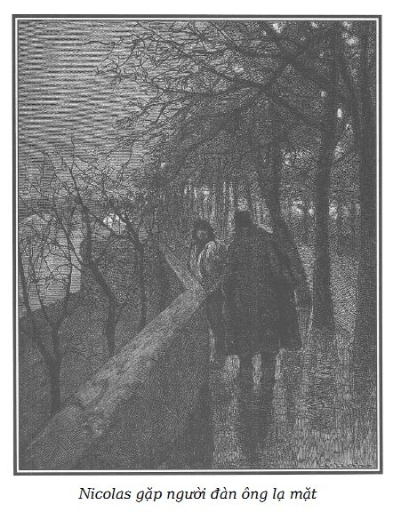

Sau vài phút im lặng, người đàn bà góa bảo con gái: Mày lấy củi đi, đêm nay chúng ta sẽ xếp lại đống củi… khi Nicolas và Martial trở về.
– Martial ư? Thế mẹ cũng muốn cho anh ấy biết là…
– Lấy củi đi, – người mẹ đột ngột ngắt lời cô con gái.
Cô gái vốn quen phục tùng ý chí sắt thép của mẹ, vội thắp ngọn đèn lồng và đi ra.
Lúc cô ta mở cửa, ngoài trời tối đen như mực. Người ta chỉ nghe tiếng gió vật mình răng rắc trên những ngọn bạch dương cao vút, tiếng lách cách của các dây xích neo tàu, tiếng rì rào của gió bấc và tiếng gầm thét của sông.
Những âm thanh nghe thật não nùng.
Trong khi đó, Amandine xúc động nặng nề về số phận của François mà nó thiết tha yêu dấu, không dám ngước mắt lên, cũng không dám lau những giọt nước mắt lã chã tuôn rơi trên đầu gối. Những tiếng nức nở dồn nén khiến nó tức thở, nó cố gắng chế ngự những nhịp điệu của trái tim phập phồng vì sợ hãi.
Những giọt lệ tuôn rơi làm mắt nó nhòa đi. Vội vã xóa dấu chiếc sơ mi vừa được giao, nó bị chiếc kéo đâm vào tay, chảy máu, nhưng con bé tội nghiệp ít nghĩ đến nỗi đau của mình hơn là nghĩ đến sự trừng phạt đang chờ đợi mình vì đã để chiếc sơ mi dính máu. Rất may mụ góa đang bận tâm suy nghĩ điều gì, đã không kịp trông thấy.
Quả Bầu trở về, xách một giỏ đầy củi. Thấy mẹ đưa mắt nhìn, cô ta gật đầu ra hiệu khẳng định.
Điều đó có nghĩa quả thật có chân người chết lòi ra trên mặt đất. Mụ góa bặm môi và tiếp tục công việc, chỉ thấy bà ta dường như đưa mũi kim hối hả hơn.
Quả Bầu khêu lửa bùng lên, chú ý xem chiếc nồi nấu ở góc bếp đã sôi chưa, rồi lại ngồi bên mẹ.
– Nicolas không tới! – Cô ta bảo mẹ. – Miễn là mụ góa sáng nay, hẹn nó gặp một tay tư sản thuộc cánh Bradamanti, không làm nó lỡ việc. Mụ ta có vẻ lập lờ quá, không dám nêu ý kiến gì, không cho biết tên, mà cũng chẳng cho biết là từ đâu đến.
Mụ góa nhún vai.
– Thế mẹ cho rằng không có gì nguy hiểm cho Nicolas, hả mẹ? Dẫu sao thì mẹ cũng có lý. Mụ ta hẹn nó đúng bảy giờ tối có mặt ở bến Billy, trước nhà ga, chờ một người muốn nói chuyện với nó và lấy tên Bradamanti làm mật hiệu. Thật ra, cũng chẳng có gì nguy hiểm! Nếu Nicolas có về muộn, có lẽ nó đã kiếm được cái gì ở dọc đường cũng như cái áo mà nó đã đánh xoáy hôm kia trên chiếc tàu chở đồ giặt. – Rồi cô ta chỉ một chiếc mà Amandine đã bóc nhãn, đoạn quay sang hỏi con bé:
– Sao, mày biết đánh xoáy nghĩa là gì không?
– Nghĩa là lấy. – Con bé trả lời, mắt vẫn không ngước lên.
– Nghĩa là ăn trộm, ngốc ạ. Mày hiểu chưa? Ăn trộm.
– Hiểu rồi chị ạ!
– Và khi đã biết đánh xoáy như Nicolas, thì luôn luôn có cái kiếm chác. Cái áo nó lấy trộm hôm qua đã làm chúng ta phấn khởi, và chúng ta chỉ việc bóc nhãn hiệu đi, phải không mẹ? – Quả Bầu vừa quay lại hỏi mẹ, vừa cất tiếng cười vang, lộ ra những chiếc răng xỉn và vàng khè như màu da của mình.
Mụ góa phớt lờ trước lời đùa cợt ấy.
– Nhân việc sắm thêm đồ đạc gia đình, – Quả Bầu nhắc – có lẽ chúng ta nên mua ở cửa hiệu khác. Mẹ ạ, có một người già đến ở ngôi nhà của ông Griffon, y sĩ ở Viện tế bần Paris, từ mấy hôm nay, ngôi nhà hẻo lánh này cách bờ sông một trăm bước, ngay trước mặt lò thạch cao.
Mụ góa cúi đầu.
– Hôm qua thằng Nicolas nói là có thể tiến hành một vụ béo bở. – Quả Bầu nhắc lại. – Còn con, thì từ sáng đã biết chắc sẽ trúng rồi. Phải sai Amandine lượn quanh nhà, người ta sẽ không để ý, con bé làm như đi rong chơi, ngó quanh mọi nẻo, và về báo cho chúng ta rõ những gì nó thấy. Mày có nghe tao dặn gì mày không? – Quả Bầu quay lại hỏi Amandine, giọng gay gắt.
– Có, chị ạ, em sẽ đi. – Đứa bé run rẩy đáp.
– Mày cứ luôn miệng “vâng, em sẽ làm”, rồi mày chẳng làm gì cả, đồ xảo trá! Cái lần tao dặn mày lấy trộm một trăm xu trong quầy hàng của lão bán thực phẩm ở Asnières, trong khi tao làm lão phải lúi húi ở góc bên kia, dễ như thế. Có ai ngờ vực một đứa bé đâu. Tại sao mày không chịu nghe lời tao?
– Chị ơi, em sợ lắm, em không dám!
– Hôm nọ, mày đã dám lấy trộm một chiếc khăn tay trong kiện hàng của người bán rong lúc anh ta bán trong quán rượu. Anh ta có trông thấy gì đâu, đồ ngu!
– Chị ơi, đó là vì chị bắt em lấy. Vả lại đó không phải là tiền.
– Thế thì sao nào?
– Chết chửa! Lấy một cái khăn tay, đâu đến nỗi không xấu xa như ăn trộm tiền.
– Lời hứa danh dự của mày đấy à? Lại là Martial dạy cho mày những trò đạo đức ấy, phải không? – Quả Bầu mỉa mai chì chiết. – Cái gì mày cũng mách với anh ấy, đồ chỉ điểm! Mày tưởng chúng tao sợ anh ấy à, anh Martial của mày ấy? – Rồi quay sang phía bà mẹ, Quả Bầu nói thêm. – Mẹ thấy không, con bé này rồi hỏng mất thôi. Anh ấy muốn làm trời làm đất ở đây chắc. Nicolas rất bực anh ấy, con cũng vậy. Anh ấy kích động Amandine và François chống lại bọn con, chống lại cả mẹ nữa. Liệu có kéo dài mãi tình hình này được không?
– Không được! – Người mẹ trả lời vắn tắt và gay gắt.
– Nhất là từ ngày cái con Sói Cái bị giam ở Saint-Lazare thì anh ấy lồng lộn lên với tất cả mọi người. Thế có phải lỗi tại chúng ta mà người yêu anh ấy phải ở tù không? Khi nào mãn hạn, con bé ấy cứ việc dẫn xác đến đây, con sẽ cho nó biết tay. Đó là biện pháp hay nhất, mặc cho nó phản đối.
Mụ góa sau một lúc suy nghĩ, nói với con gái:
– Mày tin là có thể chơi lão già ở nhà viên thầy thuốc một vố sao?
– Vâng, mẹ ạ!
– Lão ta có vẻ như một người ăn xin!
– Điều ấy không ngăn cản lão ta là một nhà quý tộc.
– Một nhà quý tộc?
– Vâng, và lão có vàng trong túi, mặc dù ngày nào lão cũng đi bộ, và trở về với một cái gậy ba toong.
– Sao mày biết lão có vàng?
– Chiều nay con ở bưu cục Asnières xem có thư từ Toulon gửi về không…
Nghe mấy lời nhắc tới đứa con trai bị giam ở nhà tù khổ sai, mụ góa cau mày nén một tiếng thở dài. Quả Bầu tiếp tục:
– Con đợi đến lượt mình, khi ông già ở nhà người thầy thuốc đi vào, con nhận ra ngay ông ta với bộ râu bạc trắng, bộ mặt có nước da màu gỗ hoàng dương và đôi lông mày rậm đen. Ông ta có vẻ không dễ tính. Mặc dù có tuổi, ông ta trông có vẻ quả quyết. Ông ta hỏi cô nhân viên: “Có thư gửi tới Angers cho Bá tước de Saint-Remy không cô?” – “Có, – cô ta trả lời – có một bức thư.” – “Thư gửi cho tôi đấy. – Ông ta nói. – Đây, giấy thông hành của tôi đây.” Trong khi cô nhân viên ngắm nhìn ông ta, ông già, để trả tiền cước, đã rút cái túi lụa xanh lục. Ở một đầu, con thấy vàng ánh lên qua các mắt lưới, có cái to như quả trứng ấy, ít ra cũng phải bốn mươi hoặc năm mươi đồng louis! – Quả Bầu xuýt xoa, đôi mắt ánh lên vì thèm khát. – Ấy thế mà ông ta ăn mặc như người hành khất. Đó là một trong số các ông già keo kiệt ôm ấp bao nhiêu của cải. Này, mẹ ạ, chúng con biết tên ông ta, có khi sẽ cần đến để đột nhập vào nhà ông ta. Amandine cho biết rõ ông ta có người hầu không.
Tiếng chó sủa làm Quả Bầu ngừng lại một lát, rồi lại tiếp tục:
– A, chó sủa! Chúng nghe thấy tiếng tàu. Chắc là Martial hoặc Nicolas.
Nghe đến tên Martial, nét mặt Amandine ánh lên một niềm vui dồn nén.
Sau mấy phút chờ đợi, nóng lòng và lo lắng đưa mắt nhìn đăm đăm ra cửa, đứa bé buồn rầu khi thấy Nicolas, kẻ đồng lõa trong tương lai của Cá Trê, đi vào.
Vẻ mặt Nicolas vừa bần tiện, vừa hung dữ, thân hình nhỏ bé mảnh khảnh, gầy gò, người ta không thể tưởng tượng nổi là anh ta có thể làm được cái nghề nguy hiểm và tội lỗi này. Khốn nỗi một năng lực tinh thần man rợ đã bù vào sức mạnh thể chất mà tên khốn kiếp này không có.
Bên ngoài bộ đồ thợ màu xanh, Nicolas khoác chiếc áo dài bằng da dê màu nâu, để lông dài, không ống tay. Vào nhà, anh ta quẳng xuống một thỏi đồng vác trên vai một cách khó nhọc.
– Đêm làm và thành quả tốt mẹ ạ! – Anh ta cất giọng trầm và khàn nói với mẹ sau khi rũ được gánh nặng trên vai. – Còn ba thỏi trong xuồng, một gói quần áo cũ và một thùng gì đó, vì con cũng chẳng thèm mở ra. Không chừng con đã bị lấy trộm, để xem thế nào!
– Thế còn người ở bến Billy? – Quả Bầu hỏi trong khi mụ góa im lặng nhìn con trai.
Nicolas, thay vì đáp lại, thọc tay vào túi quần, lắc lắc túi làm cho mớ tiền kêu lẻng xẻng.
– Anh đã lấy tất cả của nó à? – Quả Bầu hỏi to.
– Không, tự nó xùy ra hai trăm franc, rồi nó lại xùy ra tám trăm franc khi tao… nhưng thôi đủ rồi. Trước hết hãy dỡ hàng ở chiếc xuồng ra đã, rồi chuyện phiếm sau. Martial không có ở nhà à?
– Không. – Cô em đáp.
– Càng hay! Chúng ta sẽ cất đồ lấy được mà không cho anh ấy biết. Anh ấy không biết càng hay!
– Anh sợ anh ấy à? Đồ nhát gan! – Quả Bầu hỏi một cách khó chịu.
– Sợ anh ấy! Tao sợ… – Anh ta nhún vai, – có sợ thì sợ anh ấy phản bội chúng ta, thế thôi. Còn chuyện sợ anh ấy, lưỡi dao tao cũng khá sắc đấy!
– Hừ, khi anh ấy không có ở đây, anh khua môi múa mép. Lúc anh ấy ở nhà, thì câm như hến.
Nicolas hầu như trơ trơ trước lời chê trách ấy, anh ta giục:
– Nào, nhanh lên, ra tàu. Thằng François đâu rồi mẹ? Nó cũng phải xúm tay vào chứ!
– Mẹ đang nhốt trên kia sau khi dần cho một trận. Nó ngủ luôn không ăn tối. – Quả Bầu nói.
– Tốt thôi! Nhưng nó cũng phải dỡ hàng xuống chứ, phải không mẹ? Con, nó và Quả Bầu, chỉ một lèo thôi, là mang về đây hết.
Mụ góa chỉ một ngón tay lên trần nhà. Quả Bầu hiểu ý, lên gọi François.
Vẻ mặt âu sầu của bà Martial tươi lên một chút từ lúc Nicolas trở về. Bà ta yêu thằng con này hơn Quả Bầu, nhưng vẫn còn kém đứa con trai bị giam ở Toulon như bà ta vẫn nói… Tình mẫu tử ở con người hung dữ này tăng theo mức độ phạm trọng tội của lũ con.
Sự ưa thích tai quái này đủ giải thích sự xa cách của mụ góa đối với hai đứa con út không tỏ ra có bẩm tính xấu, và sự hằn học sâu sắc của bà ta đối với Martial, đứa con trai cả, tuy không có một cuộc sống không ai chê trách được, cũng có thể coi như một con người rất lương thiện nếu đem so sánh với Nicolas, với Quả Bầu và với đứa em bị tù khổ sai ở Toulon.
– Đêm nay mày làm ăn ở đâu thế? – Mụ góa hỏi Nicolas.
– Lúc từ bến Billy trở về, sau khi đã gặp lão tư sản như đã hẹn, con đảo qua cầu Phế Binh, thấy một chiếc thuyền bỏ neo ở bến cảng. Trời tối đen như mực, con tự nghĩ: không có ánh sáng trong ca bin, thủy thủ tất đã lên bờ. Con áp mạn thuyền. Nếu gặp cảnh sát, con sẽ xin một mẩu dây thừng, nói là để buộc mái chèo. Con vào ca bin, không có ai, thế là con tha hồ vơ mọi thứ, quần áo cũ, một thùng lớn, và trên boong có bốn thỏi đồng. Con lượn hai vòng, chiếc thuyền chở đầy đồng và sắt. A, François và Quả Bầu kia rồi! Nhanh xuống đi! Nào, cả mày nữa. Ê, Amandine, mày xách quần áo cũ nhé. Phải chuyển về đã, trước khi nhấc thêm.
Còn lại một mình, mụ góa chuẩn bị bữa tối, đặt cốc chén, chai rượu, đĩa sứ và những bộ đồ muỗng, nĩa bằng bạc lên bàn.
Lúc bà ta chuẩn bị xong thì lũ con trở về, đứa nào cũng vác nặng.
Hai thỏi đồng vác trên vai dường như đè bẹp thằng François, Amandine nửa người bị che lấp dưới đống quần áo cũ đội trên đầu, sau cùng là Nicolas có Quả Bầu giúp sức khiêng một thùng gỗ trắng gác trên thỏi đồng thứ tư.
– Thùng đồ, thùng đồ! Phá toang nó ra. – Quả Bầu sốt ruột reo lên.
Những thỏi đồng được quẳng xuống nền nhà.
Nicolas cầm lưỡi sắt dày của chiếc rìu con giắt ở thắt lưng luồn dưới nắp thùng, đặt ở giữa bếp để nạy nó lên. Ánh lửa đỏ nhạt và chập chờn của bếp lửa chiếu rọi cảnh cướp bóc này. Bên ngoài, tiếng gió rít càng lúc càng dữ dội.
Nicolas khoác áo da dê, ngồi xổm trước chiếc thùng, vừa tìm cách đập nó ra vừa thốt ra những lời chửi rủa khi thấy chiếc nắp vẫn trơ trơ trước sức đẩy mạnh mẽ.
Đôi mắt rực sáng vì hám của, hai má bừng lên do sự kích động trước của cải đoạt được, Quả Bầu quỳ trên cái thừng, lấy sức nặng của mình ghì xuống để tạo một chỗ dựa vững chắc hơn cho tác động đòn bẩy của Nicolas.
Mụ góa, đứng phía bên kia, cũng nghiêng mình về phía cái thùng, mắt ánh lên vì thèm thuồng dữ dội.
Sau hết, điều rất tàn nhẫn nhưng khốn nỗi rất thường tình! Hai đứa bé mà những bản năng tự nhiên tốt đẹp thường vượt lên ảnh hưởng tệ hại của sự đồi bại ghê tởm của gia đình, chúng quên cả đắn đo và sợ hãi buông thả theo sức lôi cuốn của tính tò mò. Đứng sát lại gần nhau, mắt long lanh, hơi thở dồn dập, François và Amandine không phải là không hấp tấp muốn biết trong thùng chứa đựng những gì, cũng không phải là không bực bội vì sự cạy phá chậm chạp của Nicolas.
Mãi sau nắp thùng mới bật tung ra.
– A! – Cả nhà cùng reo lên, hồi hộp và mừng rỡ.
Tất cả, từ người mẹ đến đứa con gái bé nhất sà xuống, sấn sổ vào chiếc thùng đã bật nắp, với sự cuồng nhiệt dữ dội. Chắc hẳn là được gửi từ Paris đến một cửa hiệu mới tại một thị trấn ven sông, thùng hàng chứa rất nhiều vải dùng cho phụ nữ.
– Nicolas không bị lấy trộm đâu! – Quả Bầu vừa kêu lên vừa tháo một súc vải mousseline.
– Không. – Tên cướp vừa trả lời vừa mở một gói khăn quàng cổ. – Thế là hòa vốn!
– Lụa Cận Đông nữa, bán dễ như bán bánh. – Mụ góa vừa lên tiếng vừa thò tay vào thùng moi thêm.
– Mụ chứa đồ của thằng Cánh Tay Đỏ ở phố chợ Temple sẽ mua món vải, – Nicolas nói thêm – còn lão Micou, người cho thuê phòng có sẵn đồ ở Saint-Honoré sẽ thu xếp phần đồ đồng này.
– Amandine này, – François thì thầm với em gái, – cái khăn lụa mà anh Nicolas đang cầm thật đẹp, có thể dùng làm cà vạt!
– Làm khăn trùm đầu cũng rất đẹp. – Con bé thích thú phụ họa.
– Phải công nhận là anh đã gặp may leo lên được chiếc thuyền này, Nicolas ạ. – Quả Bầu bảo anh trai. – Này, thích chưa! Bây giờ là những chiếc khăn san, có ba chiếc, tơ gốc, loại chính hiệu. Xem này!
– Mụ Burette sẽ trả chỗ này ít nhất là năm trăm franc, – mụ góa phát biểu sau khi ngắm nhìn kĩ lưỡng.
– Như vậy, tất cả ít nhất cũng phải một nghìn năm trăm franc. – Nicolas lên tiếng. – Nhưng như người ta vẫn bảo, ai oa trữ đồ ăn trộm cũng là kẻ trộm. Chà, kệ nó, tao không thích chuyện cò kè. Lần này tao vẫn còn khá ngờ nghệch để mụ Burette làm theo ý mụ, cả lão Micou cũng thế. Nhưng lão Micou là chỗ thân tình.
– Cũng thế thôi. Lão ta cũng là kẻ trộm như những đứa khác, cái lão già bán sắt vụn ấy; nhưng cái bọn oa trữ khốn kiếp kia bắt thóp được là người ta cần chúng. – Quả Bầu vừa nói vừa lấy một chiếc khăn san choàng vào người. – Thế là bọn chúng tha hồ lạm dụng!
– Chẳng còn gì nữa. – Nicolas đưa tay mò vào đáy thùng, nói.
– Bây giờ phải cất hết đi. – Mụ góa bảo.
– Phần em cái khăn này. – Quả Bầu ướm thử.
– Phần mày, phần mày! – Nicolas đột nhiên quát lên. – Mày chỉ có phần khi tao cho mày. Mày cứ lấy phứa đi à. Mày rõ là… đồ không biết ngượng!
– Anh, thế còn anh? Anh không lấy gì à?
– Tao, tao phải thí mạng đánh xoáy. Còn mày, mày đâu có phải vào xà lim nếu người ta tóm được tao trên thuyền.
– Thì đấy, chiếc khăn san của anh đấy, tôi cóc cần! – Quả Bầu hằn học đáp và vứt chiếc khăn vào thùng.
– Không phải vì chiếc khăn san mà tao nói đâu, tao đâu bần tiện đến mức cò kè từng xu vì một chiếc khăn san. Hơn kém một chiếc thì mụ Burette cũng không thay đổi giá. Mụ ấy mua cả mớ. – Nicolas nói thêm. – Nhưng đáng lẽ nói với tao rằng cho mày chiếc khăn san này thì mày lại xí phần ngay. Nhưng thôi, đây, mày cầm lấy, cầm lấy! Tao bảo mày đấy! Nếu không tao quẳng vào bếp để đun nồi thịt ngay.
Những lời này làm cho Quả Bầu bớt cau có, cô ta hí hửng cầm chiếc khăn.
Nicolas đang ở trong tư thế sẵn sàng hào hiệp. Anh ta lấy răng cắn tấm lụa xếp trên cùng, lôi ra hai chiếc khăn quàng cổ, ném cho François và Amandine đang ngắm nghía mãi không thôi một cách háo hức.
– Cho chúng mày đấy, bọn nhóc ạ! Ngốn miếng này, chúng mày sẽ thích đánh xoáy cho mà xem! Ăn quen bén mùi mà! Thôi bây giờ chúng mày đi ngủ đi. Tao còn chuyện phiếm với mẹ. Có người đem bữa ăn tối lên cho chúng mày.
Hai đứa trẻ thích thú vỗ tay và vung vẩy một cách hoan hỉ những chiếc khăn quàng cổ lấy trộm mà người anh vừa cho chúng.
– Thế nào, bọn nhóc ngu đần, – Quả Bầu lên giọng – chúng mày có nghe lời anh Martial nữa hay thôi? Anh ấy đã bao giờ cho chúng mày những chiếc khăn quàng cổ đẹp như thế này chưa?
François và Amandine nhìn nhau, cúi đầu im lặng.
– Nói đi chứ, – Quả Bầu nhắc lại một cách gay gắt – anh Martial có bao giờ cho chúng mày quà cáp gì không?
– Chu cha! Không, anh ấy chưa bao giờ cho bọn em cái gì cả. – François vừa trả lời vừa nhìn chiếc khăn lụa hồng một cách sung sướng.
Amandine cũng rụt rè khẽ nói:
– Anh Martial không cho chúng em quà vì anh ấy chẳng có gì…
– Nếu anh ấy ăn trộm, anh ấy sẽ có, – Nicolas dằn giọng – phải không, François?
– Vâng, anh ạ. – François trả lời rồi nó xuýt xoa. – Ôi chiếc khăn quàng đẹp quá! Chiếc cà vạt cho ngày Chủ nhật đẹp biết bao!
– Còn em, chiếc khăn trùm đầu thật đẹp! – Amandine nối lời.
– Ấy là chưa kể bọn trẻ nhà bác thợ nung vôi sẽ phát điên lên khi thấy chúng mày đi qua. – Quả Bầu chêm vào, rồi quan sát nét mặt của bọn trẻ xem chúng có hiểu hết ý nghĩa hiểm ác của những lời nói ấy không. Đứa con gái quả quyết ấy đã huy động cả tính khoe khoang đến trở lực hòng dập tắt những nỗi e ngại cuối cùng của hai đứa bé khốn khổ này. – Lũ con của bác thợ nung vôi, – cô ta nói tiếp – trông như ăn mày, chúng sẽ uất lên vì ghen tức, bởi vì với những chiếc khăn lụa, chúng mày có dáng dấp như con cái nhà tư sản!
– Vâng, đúng đấy, – François hưởng ứng, – vậy thì em lại càng khoái về chiếc cà vạt đẹp của em, vì lũ nhóc nhà bác thợ nung vôi sẽ phát điên lên vì không có một chiếc như thế. Phải thế không, Amandine?
– Em thì em rất mừng có được chiếc khăn trùm đầu đẹp, thế thôi!
– Bởi thế, mày sẽ chỉ mãi là con bé ngớ ngẩn! – Quả Bầu lên giọng khinh khỉnh. Rồi lấy bánh và một miếng pho mát ở trên bàn, đưa cho hai đứa trẻ và bảo:
– Chúng mày lên ngủ đi! Đèn lồng đây, cẩn thận kẻo cháy và nhớ tắt đèn trước khi ngủ.
– À, này, – Nicolas dặn thêm, – chúng mày nhớ kĩ nếu dại dột nói với Martial về cái thùng, những thanh đồng và quần áo cũ thì chúng mày sẽ nhừ đòn. Chưa kể là tao sẽ lấy lại mấy chiếc khăn quàng đó.
Sau khi bọn trẻ đi rồi, Nicolas và cô chị giấu kín quần áo, thùng vải và các thanh đồng vào tận góc trong cùng của một cái hầm nhỏ xây thấp xuống vài bậc, ăn thông với bếp, cách lò sưởi mấy bước.
– À, thế chứ, mẹ ơi! Cho rượu nào, thứ hảo hạng ấy! – Tên cướp kêu lên, – thứ rượu vang ngon, cả rượu trắng nữa. Ngày hôm nay, con kiếm được kha khá đấy. Dọn bữa tối đi, Quả Bầu. Bây giờ hãy nói chuyện về lão tư sản ở bến cảng Billy, vì mai hoặc ngày kia là phải xúc tiến gấp nếu muốn đút túi số tiền lão đã hứa. Con sẽ kể mẹ nghe, mẹ ạ. Nhưng uống đi chứ, chu cha! Uống đi! Hôm nay con đãi!
Rồi Nicolas lại khua xủng xẻng những đồng trăm xu trong túi và quăng ra xa chiếc áo da dê, chiếc mũ trùm len đen. Anh ta ngồi vào bàn ăn trước một đĩa ra-gu cừu to tướng, một miếng thịt bê nguội và xa lát.
Khi Quả Bầu đã đem cả rượu vang và rượu trắng ra, mụ góa nét mặt luôn luôn điềm nhiên và ủ rũ, ngồi một bên bàn, Nicolas bên phải, Quả Bầu bên trái, trước mặt bà ta là những chỗ để trống dành cho Martial và hai đứa em út.
Tên cướp rút trong túi ra một con dao dài và rộng bản, miền Catalan, cán sừng, lưỡi nhọn. Ngắm nghía thứ vũ khí giết người với vẻ thỏa mãn hung dữ, anh ta bảo mẹ:
– Xẻo họng luôn luôn chặt ngọt! Đưa bánh đây, mẹ!
– Nhân chuyện dao, – Quả Bầu nói – thằng François thấy cái ấy ở nơi xếp củi.
– Cái gì kia? – Nicolas không hiểu, hỏi lại.
– Nó thấy một cái chân…
– Chân người à? – Nicolas ngạc nhiên hỏi tiếp.
– Phải. – Mụ góa vừa đáp vừa đặt một lát thịt đùi vào đĩa của con.
– Quái thật! Cái hố sâu thế kia mà. Nhưng từ lúc nào? Đáng lẽ đất đỏ lấp đầy rồi chứ!
– Đêm nay phải quẳng tất cả ra sông. – Mụ góa bảo con.
Nicolas hưởng ứng:
– Vâng, như thế chắc chắn hơn.
– Ta sẽ buộc vào đấy một tảng đá và một đoạn dây xích neo tàu cũ. – Quả Bầu nêu ý kiến.
– Đừng dại thế! – Nicolas vừa nói vừa rót rượu ra cốc, tay vẫn cầm chai rượu, bảo mẹ. – Nào, chạm cốc với bọn con, như thế mẹ sẽ vui hơn!
Mụ góa lắc đầu, đẩy lùi chiếc cốc sang bên và hỏi con:
– Thế còn người đàn ông ở bến Billy?
– Chuyện là thế này. – Nicolas nói, không ngừng ăn và cũng không ngừng uống. – Đến ga, con cột xuồng lại, lên bến cảng. Đồng hồ tiệm bánh mì bán cho binh sĩ phố Chaillot vừa điểm bảy giờ, cách bốn bước đã không trông rõ mặt nhau. Con đi dạo dọc theo lan can khoảng mười lăm phút. Chợt nghe phía sau có tiếng bước nhẹ, con đi chậm lại, một người trùm kín trong chiếc áo choàng vừa đến gần con vừa ho. Con dừng lại, người ấy cũng dừng lại. Chiếc áo choàng che lấp cả mũi, còn mũ thì kéo xuống tận mắt nên con không rõ mặt.

.(Chúng tôi lưu ý bạn đọc là nhân vật bí mật này là Jacques Ferrand, viên chưởng khế muốn thủ tiêu Marie, ngay trong buổi sáng, đã giục mụ Séraphin đến nhà Martial mà lão hy vọng sẽ là công cụ của lão trong tội lỗi mới này).
– Bradamanti, lão tư bản nói với con, – Nicolas kể tiếp – đây là mật hiệu đã ước định ngày hôm trước để bọn con nhận ra nhau. Người mò sông, con cũng trả lời lại, như đã ước định trước. “Anh là Nicolas phải không?” Lão hỏi con. – “Vâng, thưa ông.” – “Anh có một chiếc tàu?” – “Chúng tôi có bốn chiếc, ngài tư sản ạ! Đó là nghề nghiệp của chúng tôi. Lái thuyền và mò ở sông, cha truyền con nối, xin phục vụ ngài.” – “Đây, công việc như thế này, nếu anh không sợ…” – “Sợ cái gì, ngài tư sản?” – “Sợ thấy người nào đó chết đuối do tai nạn, chỉ có điều là phải gây ra thêm tai nạn nữa. Anh hiểu không?” – “À, ra thế, ngài tư sản ạ, vậy là phải cho một người nào đó uống nước ngay trên sông Seine này, như chuyện tình cờ? Cái đó tôi làm được thôi. Nhưng, vì đó là một món thịt ra-gu nấu kiểu riêng, nên cần nhiều gia vị.” – “Hết bao nhiêu, cho một đôi?” – “Cho một đôi? Vậy là có hai người đem nấu nước dùng trên sông?” – “Phải.” – “Năm trăm franc một người, ngài tư sản ạ, không đắt đâu.” – “Nghĩa là một nghìn franc?” – “Trả tiền trước đấy, ngài ạ!” – “Hai trăm franc ứng trước, còn lại đưa sau.” – “Thế ngài không tin tôi ư, ngài tư sản?” – “Không! Anh có thể đút túi hai trăm franc của tôi mà không thực hiện hợp đồng.” – “Nhưng ngài tư sản ạ, một khi công việc hoàn thành, khi tôi đến lấy tám trăm franc còn lại, ngài có thể trả lời tôi: ‘Cảm ơn anh nhé! Tôi trả đủ rồi.’” – “Đấy là một khả năng. Thế này nhé, anh có đồng ý không, trả lời dứt khoát? Hai trăm franc tiền mặt và tối ngày kia, tại đây, đúng chín giờ, tôi sẽ đưa anh tám trăm franc.” – “Nhưng ai sẽ nói cho ông biết là tôi đã cho hai người kia uống nước?” – “Tôi biết chứ. Đó là việc của tôi. Đồng ý không?” – “Đồng ý thế, ngài tư sản ạ!” – “Đây, hai trăm franc. Bây giờ hãy nghe tôi: anh đã nhìn kĩ bà già sáng nay đến tìm anh chưa?” – “Dạ, đã.” – “Ngày mai, hoặc chậm nhất ngày kia, vào hồi bốn giờ chiều, anh sẽ thấy bà ta tới bờ sông trước mặt hòn đảo này với một cô gái tóc hoe, bà già sẽ ra hiệu anh bằng cách vẫy chiếc khăn tay.” – “Dạ vâng!” – “Phải mất bao lâu để đi từ bờ sông đến hòn đảo của anh?” – “Phải hai mươi lăm phút.” – “Xuồng của anh phẳng chứ?” – “Phẳng như lòng bàn tay, ngài ạ.” – “Anh sẽ làm một cách khéo léo một loại xu páp rộng dưới đáy xuồng để có thể, khi mở chiếc xu páp đó sẽ làm đắm chiếc xuồng trong chớp mắt. Anh hiểu không?” – “Hiểu rõ, ngài tư sản ạ! Ngài tinh lắm! Đúng là tôi có một chiếc xuồng cũ đã gần mục hẳn. Tôi muốn tống nó đi. Cho nó đi chuyến cuối cùng này là khéo.” – “Vậy thì anh xuất phát từ đảo với chiếc xuồng có xu páp. Một chiếc xuồng tốt, do người nhà anh chèo sẽ theo sau. Anh áp vào bờ cho bà già và cô gái tóc hoe lên chiếc xuồng có xu páp và anh cho xuồng về đảo. Nhưng đến một khoảng cách bờ vừa phải, anh vờ cúi xuống như để sửa sang chỗ nào đấy, anh mở xu páp và nhảy nhanh sang chiếc xuồng kia, trong khi bà già và cô gái tóc hoe…” – “Uống nước cùng lúc, đúng như thế, ngài tư sản ạ!” – “Nhưng anh có chắc là không bị quấy rầy không? Nếu có khách hàng đến quán của anh thì sao?” – “Không sợ gì, ngài tư sản ạ! Đến giờ này, nhất là về mùa đông, không ai đến. Đấy là mùa ngưng hoạt động, mà nếu có, thì cũng không ai làm trở ngại, trái lại, tất cả đều là bạn thân quen.” – “Tốt lắm! Vả lại anh cũng không bị liên lụy gì cả. Chiếc xuồng coi như bị đắm vì cũ kĩ và bà già dẫn cô gái đến đây cũng biến theo cô ấy. Sau hết, để đảm bảo là cả hai người đều đã bị chết đuối, tất cả là do tai nạn, anh có thể, nếu họ nổi lên mặt nước hoặc nếu họ bấu víu vào xuồng, làm ra vẻ tìm mọi cách để cứu họ, và…” – “Và giúp họ nhào xuống nước lại. Được thôi, ngài tư sản ạ!” – “Nhưng cuộc dạo chơi phải được thực hiện sau khi mặt trời lặn, để lúc họ rơi xuống nước thì trời đã tối.” – “Đừng, ngài tư sản ạ, bởi vì nếu chọn lúc không nhìn rõ, thì làm sao biết được cả hai người đã uống no nê chưa, hay họ còn muốn uống thêm nữa?” – “À, phải đấy. Vậy thì tai nạn sẽ xảy ra trước lúc mặt trời lặn.” – “Hay quá, ngài tư sản ạ! Nhưng bà già không nghi ngờ gì à?” – “Không, khi đến bà ta sẽ nói thầm với anh: ‘Phải dìm con bé xuống nước, một lát trước khi đánh đắm chiếc xuồng, hãy ra hiệu cho tôi biết để tôi sẵn sàng thoát khỏi với anh.’ Anh sẽ trả lời bà ta cách nào để bà ta khỏi ngờ vực.” – “Để bà ta tin là tôi sẽ đưa cô bé tóc hoe đi uống nước…” – “Và bà ta sẽ cùng uống nước với cô ta.” – “Như thế là sắp đặt rất khéo, ngài tư sản ạ!” – “Và tốt nhất là đừng để bà ta nghi ngờ.” – “Ngài cứ yên tâm, bà ta sẽ uống nước nhẹ nhàng như uống mật vậy.” – “Thôi, chúc anh may mắn nhé, anh bạn! Nếu được như ý, có thể tôi còn cậy nhờ anh nữa.” – “Xin phục vụ ngài, ngài tư sản ạ!”
Ngay lúc ấy, tên cướp nói thêm để kết thúc câu chuyện:
– Con rời khỏi người khoác áo choàng, trở về xuồng, và khi đi ngang qua chiếc thuyền dài, con đã cuỗm được tất cả các món vừa rồi.
Qua câu chuyện của Nicolas, chúng ta thấy rõ viên chưởng khế có ý định luôn một trận khử cả Sơn Ca và mụ Séraphin bằng cách làm cho mụ sa vào bẫy mà mụ tưởng chỉ dành riêng cho cô bé Sơn Ca.
Chúng tôi cần nhắc rằng, lo ngại một cách chính đáng là mụ Vọ có thể bất chợt cho Marie biết là cô bé đã bị mụ Séraphin bỏ rơi, Jacques Ferrand cho rằng việc thủ tiêu cô gái này có tầm quan trọng đặc biệt vì những lời khiếu tố của cô có thể gây nguy hại hết sức lớn lao cho lão cả về tiền tài và danh dự.
Còn về mụ Séraphin, khi thí bỏ mụ này, viên chưởng khế đã loại trừ được một trong hai đồng lõa (Bradamanti là kẻ còn lại) có thể làm nguy hại đến lão khi chúng bị nguy hại, điều đó rất đúng, nhưng Jacques Ferrand còn tin là những bí mật của lão sẽ được nấm mồ giữ kín đáo hơn là lợi lộc cá nhân.
Bà mẹ và Quả Bầu chăm chú nghe Nicolas, còn tên này thì chỉ ngừng lời khi nốc rượu. Bởi vậy anh ta lại tiếp tục kể chuyện với niềm hứng khởi lạ lùng.
– Chưa hết đâu. Con còn bắt tay làm công việc khác với mụ Vọ và thằng Cá Trê, ở phố Hàng Đậu. Đây là một công việc khá lý thú, dàn dựng tài tình và nếu không bị hẫng thì cũng kiếm chác được, con dám chắc như thế. Đó là việc tước đoạt của cải của một mụ làm môi giới bán ngọc có lúc có tới năm mươi nghìn franc đồ ngọc trong túi.
– Năm mươi nghìn franc kia à! – Hai mẹ con mắt sáng ngời lên vì ham muốn, cùng kêu lên.
– Vâng, chỉ thế thôi. Thằng Cánh Tay Đỏ cũng sẽ tham gia. Hôm qua hắn ta đã biên thư phỉnh phờ mụ môi giới. Cá Trê và con đã đưa thư ấy đến đại lộ Saint-Denis. Cánh Tay Đỏ quả là tay cừ khôi! Hắn ta cũng biết cách nên không bị ai nghi ngờ. Để nhử mụ môi giới, hắn đã bán cho mụ một viên kim cương bốn trăm franc. Mụ chẳng chút ngờ vực, đến quán rượu của hắn ở đường Champs-Élysées lúc xế chiều. Bọn con sẽ nấp sẵn ở đấy. Quả Bầu cũng sẽ đến, nó sẽ giữ chiếc xuồng của con ở dọc sông Seine. Nếu cần đưa mụ môi giới đi, dầu chết hay còn sống, thì chiếc xuồng đó thật tiện, chẳng để lại dấu vết gì. Kế hoạch là như vậy! Thằng Cánh Tay Đỏ đểu giả, đầu óc thông tuệ thật!
– Ta không bao giờ tin thằng Cánh Tay Đỏ, – mụ góa lẩm bẩm – sau vụ việc ở đường Montmartre. Thằng Ambroise em mày bị đi đày ở Toulon, có bằng chứng gì buộc tội nó? Thằng ấy tinh quái lắm! Nhưng phản bội người khác thì chưa bao giờ!
Mụ góa lắc đầu, như là bà ta chỉ tin được phần nào tính ngay thẳng của Cánh Tay Đỏ.
Sau vài phút nghĩ ngợi, bà ta nói:
– Tao thích việc bến cảng Billy thực hiện vào ngày mai hoặc chiều ngày kia hơn, việc dìm hai người đàn bà ấy. Nhưng coi chừng Martial sẽ phá chúng ta, như bao bận rồi.
– Thiên la địa võng cũng không dứt nổi anh ấy ra khỏi nhà này ư? – Nicolas ngà ngà say vừa nguyền rủa vừa hùng hổ cắm con dao dài trên mặt bàn.
– Tụi con đã nói với mẹ rằng tụi con đã ngấy lắm rồi, rằng tình hình này không thể kéo dài. – Quả Bầu phụ họa. – Chừng nào anh ấy còn ở nhà này, chúng ta không thể bảo ban gì nổi bọn trẻ.
– Này, con nói thật đấy, một ngày nào đó anh ấy có thể đi tố cáo chúng ta, đồ kẻ cướp! – Nicolas hậm hực. – Mẹ thấy không! Nếu mẹ nghe con, – anh ta vừa nói thêm vừa nhìn mẹ cái nhìn hung dữ đầy ẩn ý – mọi việc sẽ đâu vào đấy…
– Cũng còn nhiều cách khác.
– Nhưng đó là cách tốt nhất! – Tên cướp cãi lại.
– Bây giờ thì không được. – Bà mẹ trả lời với một giọng độc đoán đến mức Nicolas phải nín lặng, bị uy lực của mẹ lấn át, người mẹ mà anh ta biết cũng phạm tội, cũng hiểm độc, và còn quyết liệt hơn anh ta nữa.
Bà mẹ nói thêm:
– Sáng mai, nó sẽ rời đảo vĩnh viễn.
– Thế nào? – Quả Bầu và Nicolas cùng hỏi.
– Nó sắp về, chúng mày gây sự với nó, nhưng thật quyết liệt, trực diện chứ không lén lút như trước. Phải choảng thật sự, nếu cần. Nó khỏe thật, nhưng tao sẽ trợ lực. Nhưng dứt khoát không được dùng dao. Không được đổ máu, miễn là nó bị đánh thôi, nhưng không gây thương tích.
– Nhưng rồi sau đó thì sao, mẹ? – Nicolas hỏi.
– Sau đó chúng ta yêu cầu nó rời đảo vào ngày mai, nếu không cảnh tượng tối nay sẽ lại tái diễn. Tao biết tính nó rồi, những cuộc ẩu đả liên tục này sẽ làm cho nó chán chường. Từ trước đến nay, chúng ta đã để nó quá yên ổn.
– Nhưng anh ấy cứng đầu lắm, anh ấy có thể vẫn muốn ở lại vì hai đứa nhỏ. – Quả Bầu nói.
– Thật là một đứa khốn nạn hết chỗ nói. Nhưng một cuộc ẩu đả chưa làm cho anh ta kiềng đâu. – Nicolas phụ họa thêm.
– Ừ, một bận thì chưa ăn thua gì, – mụ góa nói – nhưng ngày nào cũng thế, thì là địa ngục. Nó tất phải khuất phục thôi.
– Nhưng nếu anh ấy không chịu khuất phục thì sao?
– Thì lúc ấy tao sẽ có cách khác, chắc chắn bắt nó phải ra đi đêm nay hoặc chậm nhất là sáng mai. – Mụ góa nhắc lại với nụ cười khó hiểu.
– Thật thế hả mẹ?
– Thật, nhưng tao muốn làm cho nó hoảng sợ vì những cuộc ẩu đả hơn, nếu việc ấy không thành, thì sẽ dùng cách khác.
– Và nếu cách khác cũng không thành nốt thì sao hả mẹ? – Nicolas hỏi.
– Thì lúc ấy sẽ có một cách cuối cùng nhất định phải được. – Bà mẹ khẳng định.
Bất thình lình cửa mở và Martial bước vào.
Ở ngoài gió thổi rất mạnh nên không ai nghe tiếng chó sủa báo hiệu là đứa con đầu của mụ góa đã trở về.